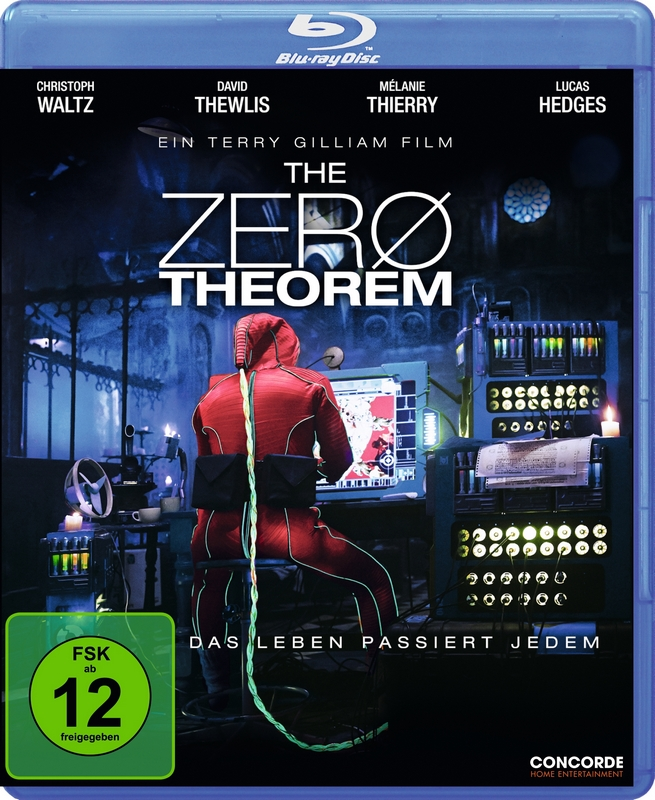

von Birgit Schwenger

The Zero Theorem (© Concorde Home Entertainment)
(bs) – Qohen Leth, ein exzentrisches Computergenie, wohnt in einer verfallenen Kirche, die er nur wiederwillig verlässt, um zur Arbeit zu gehen. Er verabscheut die bunte, laute Welt um ihn herum, die für ihn jeglichen Sinn entbehrt – zumal »wir sterben«, wie Qohen, der von sich nur in der ersten Person Plural spricht, bei jeder Gelegenheit betont. Dank der Vermittlung seines Chefs und einzigen Freundes Joby erhält er schließlich die Erlaubnis von »Management«, seinem Arbeitgeber, sich zu Hause an die Entschlüsselung des »Zero Theorems« zu machen: die mathematische Formel, die Antwort auf die Frage nach dem Sinn des Lebens geben soll. Zur Belohnung soll Qohen den lang ersehnten Anruf erhalten, von dem er sich die Antwort auf all seine Fragen erwartet. Wie ein Wahnsinniger versucht er die Formel zu knacken, verlässt seine Wohnung überhaupt nicht mehr und sucht sein Seelenheil bei der virtuellen Psychoanalytikerin Dr. Shrink-Rom. Doch anstatt ihn zu unterstützen, scheinen »Management« und seine Helfershelfer ihn eher daran zu hindern, die Gleichung zu lösen. Ständig werden ihm neue, völlig unerfüllbare Abgabetermine gesetzt, »Managements« Sohn, der geniale Hacker Bob, zieht bei ihm ein, und das Internet-Callgirl Bainsley entführt ihn in virtuelle Traumwelten. Obwohl Qohen dies zunächst als unangenehme Störfaktoren empfindet, die ihn davon abhalten, das große Rätsel der Welt zu entschlüsseln, scheint er gerade durch die Interaktion mit den anderen seine Menschlichkeit zu entdecken. Er beginnt zu kommunizieren.
Nach Brazil und Twelve Monkeys liefert Terry Gilliam mit The Zero Theorem seinen dritten Entwurf einer dystopischen Zukunftswelt ab. Der Film hat keine Handlung im konventionellen Sinne. Er ist kryptisch und selbst ein Rätsel, das es wie das titelgebende Theorem zu entschlüsseln gilt. Sogar Gilliam selbst sagt, dass es schwierig ist, den Film zu beschreiben. Es geht um einen Mann, der dem Lärm der Welt entfliehen will, der Werbung, dem Fernsehen, einfach allem. Alles erscheint komplett sinnfrei und spaßorientiert. Hinter den bunten Kulissen dieser völlig überdrehten Konsumwelt verbirgt sich jedoch ein anonymer Überwachungsstaat, der die Menschen rund um die Uhr auf allen Kanälen mit einer wahren Medienflut bombardiert, sie ablenkt und beschäftigt hält. Qohen, der – trotz all seiner Macken und Schwächen – als einziger ein klares Ziel vor Augen zu haben scheint, beginnt das System daher nach und nach zu hinterfragen. In der Rolle des von Psychosen geplagten, depressiven Computergenies geht Christoph Waltz nah an die Grenzen des Wahnsinns. Gilliam ließ ihm bei der Ausgestaltung der Rolle völlige Freiheit, so dass Waltz in Qohen eine menschliche Figur in Mitten einer scheinbar sinnlos gewordenen Welt erschuf. In weiteren Rollen spielen David Thewlis als Joby, Matt Damon als Management und Tilda Swinton als Dr. Shrink-Rom.
Der Film ist an der Grenze zur visuellen Überforderung: Alles ist extrem bunt, bizarr und verwirrend. Der Detailreichtum und die überbordende Vielfalt an Kostümen und Kulissen machen es so gut wie unmöglich, alles beim ersten Mal wahrzunehmen und zu enträtseln. So wie Qohen müssen auch wir uns als Zuschauer fragen: Sind wir noch in der Lage, den Sinn des Lebens wahrzunehmen oder lassen auch wir uns durch die Medienmaschinerie ablenken und blenden? Erst als Qohen begreift, dass der Anruf, auf den er wartet, niemals kommen wird, dass es ihm niemals gelingen wird, die Formel zu knacken, versteht er, dass sein Leben nur durch Freundschaft und Liebe einen Sinn erhält. Sicher keine leichte Kost, aber wer sich auf den verrückten Trip in Gilliams Kosmos einlässt, wird mit einer visuellen Pracht und zum Nachdenken anregender Science-Fiction im Orwellschen Sinne belohnt.